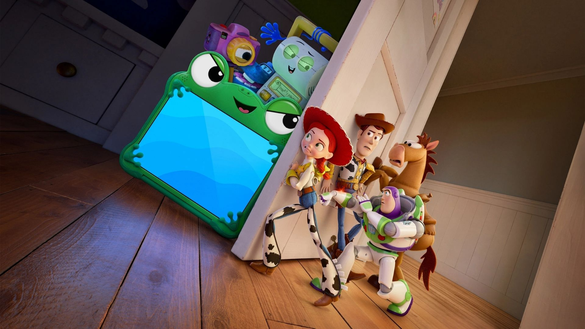

Curiosidades sobre Toy Story 5👀
Desvende os mistérios e as curiosidades escondidas no quinto capítulo da saga.
Desvende os mistérios e as curiosidades escondidas no quinto capítulo da saga.

Você Sabia?
1-
O supervisor de efeitos visuais Thomas Jordan afirma o não uso da IA durante a produção do filme. “Estamos aprendendo sobre isso e fizemos experimentos com ele, mas até agora nada corresponde aos padrões ou expectativas que temos em relação à qualidade de nossos filmes”, explicou Jordan.
2-
Tim Allen fez treinamento vocal após a Pixar notar sua voz "velha" em Toy Story 5. Com medo de ser substituído aos 73 anos, o ator usou técnicas de ópera e exercícios com canudo para recuperar o tom firme de Buzz Lightyear.
3-
Pela primeira vez na sequência de filmes, o vilão não é um brinquedo ciumento e sim um tablet, Lilypad, que entra em uma disputa com outros brinquedos pela atenção da menina Bonnie